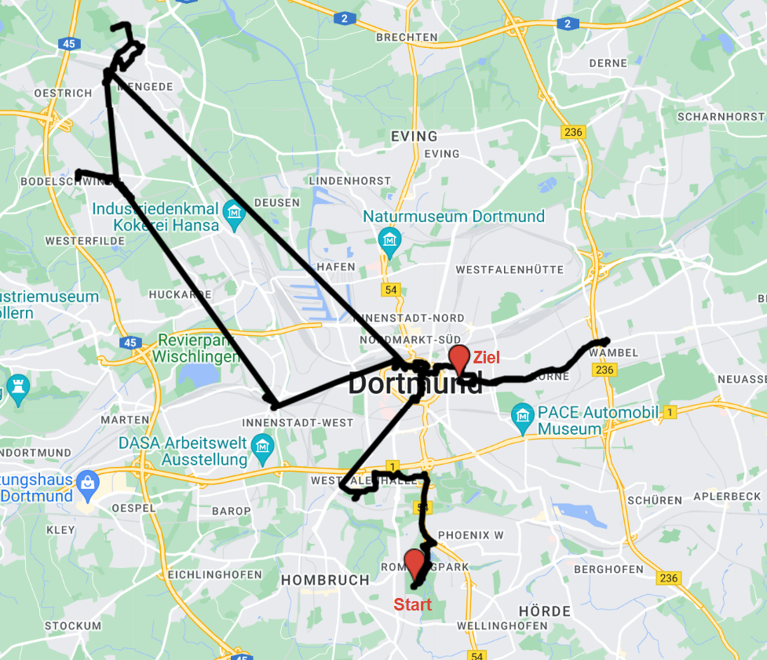

October 21, 2022
Eine Reportage des Teams Internationaler Express -- Zwei Tschechen auf einem deutschen Rätselspiel.
Ich nahm im 2019 auf meine erste Dortmunder Nachtschicht, und damit auch auf meinem ersten deutschen Rätselspiel, teil. Dann kam Covid und online Rätselspiele. Aber dieses Jahr ist es endlich wieder so weit und die Rätselspiele finden auch im Outdoor statt. Also ich konnte mit Kuba am Wochenende den 7. bis 8. Mai unter unseren üblichen Team-Namen Internationaler Express an der Dortmunder Nachtschicht teilnehmen.
Ursprünglich wollten wir nicht nur zu zweit gehen. Aber keiner von unseren Teammitgliedern aus vorherigen deutschen Rätselspielen hatte Zeit. Wir sind keine Neulinge, was Rätselspiele angeht, wir spielen schon seit mehr als zehn Jahren und jeder von uns absolvierte bereits dutzende Rätselspiele. Aber wir wissen sehr gut, dass mehr Köpfe mehr Ideen haben und ein "zákys" (ein tschechischer Slangbegriff zwischen Rätselspieler*innen für die Situation, wenn ein Team ein Rätsel stundenlang nicht lösen kann; wortwörtlich übersetzt heißt das "Sauermilch") nur schlecht zu zweit durchzubrechen sein kann. Außerdem ist Deutsch nicht unsere Muttersprache, und obwohl wir beide auf Deutsch fließend sprechen können, für ein Rätselspiel müssten unsere Kenntnisse nicht reichen. Zum Glück hat Dortmunder Nachtschicht ein robustes System von Hinweisen und im schlimmsten Fall können die Rätsel auch übersprungen werden. Am Ende kamen wir also am Samstag vor 17 Uhr zu zweit zum Start, mit der Vorstellung, dass es für uns auch ziemlich schiefgehen kann.
Am Start sind wir leicht verwirrt, wenn wir an der Registrierung zwar ein Infoheft und ein paar Zusatzrätsel bekommen (Eine Bemerkung für das nächste Mal: Kommen wir früher zum Start und starten wir die Zusatzrätsel zu lösen!), aber keinen geschlossenen Umschlag mit dem Starträtsel, wie wir aus tschechischen Rätselspielen gewöhnt sind. Die Startrede verwirrt uns noch einmal, wenn eine andere Zeit des Endes des Spiels angekündigt wird, als im Infoheft steht -- und niemand protestiert?!? Keiner von uns traut sich die Frage vor der Menge zu stellen, also Kuba fragt erst nach der Rede, während ich in einer Schlange auf das Starträtsel warte.
Ich treffe mich mit Kuba an unsere Stelle und wir schauen uns das Rätsel an. Erst jetzt fängt das Spiel richtig an. Kuba erkennt fast sofort in der Weintrauben das georgische Alphabet, die er im Infoheft sah. Die Übersetzung dauert ein bisschen, aber danach geht es schnell, Gleichungen und Ungleichungen sind ja für zwei Mathematiker kein Problem. Die ganze Lösung dauerte uns laut Statistiken 13 Minuten. Ich gebe "Notenschluessel" in dem TMS ein und packe meine Sachen, bereit sofort loszulaufen. Wir sehen niemanden sonst, der weggeht. Das TMS sagt, dass wir zum "Eisenockerquellen Rombergpark" gehen sollten. Diese Stelle kennen aber die Googlemaps nicht. Ich versuche es mit OSM und Google, dann setze ich mich wieder und packe das Stadtplan aus. Nichts. Die Minuten laufen und wir sehen jetzt auch weggehende Teams. Ich bin wütend. Ist es eine Stelle, die man kennen muss oder was? Dann sagt Kuba, dass er es gefunden habe. Im Googlemaps. Es zeigt sich, dass die Stelle "Eisenocker führende Quellen" heißt. Wenn man anfängt, "Eisenocker" in Googlemaps zu schreiben, bietet es sich automatisch an. Ich, stattdessen, kopierte einfach "Eisenockerquellen" aus dem TMS und damit bekam ich nur die Antwort "Googlemaps kennen diese Stelle nicht". Ich würde es verstehen, wenn die Lösung des Rätsels abgekürzt wäre. Aber warum kann im TMS nicht genau dieselbe Wortverbindung stehen als im Googlemaps?
Wir laufen ziemlich schnell, aber treffen keine von den Teams, die vor uns weggegangen sind. Das finde ich verdächtig, denn ich immer noch nicht wirklich überzeugt bin, dass wir zu der richtigen Stelle gehen. Doch finden wir das Rätsel dort, nur keine Teams. Komisch.
Das Rätsel ist straightforward (auf Tschechisch würde man "průchodovka" sagen, also so was wie "Durchgangsrätsel"). Wir müssen hier nur die Bilder benennen. Einige machen uns Probleme. Aber dann sehen wir schon "Rombergtak", schließen daraus, dass es ja "Rombergpark" sein muss und dass "Tank" vielleicht eher "Panzer" heißt. In 6 Minuten sind wir fertig. Diesmal gibt es im TMS sogar eine Karte und somit bin ich mir sicher, wohin wir müssen. Inzwischen kamen andere Teams, aber kein sieht so aus, als wäre es schon fertig. An der Weg fragt uns jemand aus dem Orgateam, ob wir dieses Rätsel schon gelöst haben und wie heißen wir. Dann hören wir noch seine Antwort, so was wie "das ist falsch", was wir nicht verstehen.
Wir können das Rätsel beim Torhaus nicht finden. Vielleicht aus der anderen Seite? Auch nichts. Weitere Teams kommen, wir verlieren (schon wieder) unseren kleinen Vorsprung. Erst beim einzoomen der Karte in TMS sehe ich, dass das Rätsel nicht direkt beim Torhaus ist. Tja, ich bin eher nicht die beste Navigatorin.
Wir schauen uns das Rätsel an. Die erste Idee, das Brief aus dem Infoheft zu benutzen, zeigt sich schnell als falsche. Aber weitere haben wir nicht. Warum ist der Text auf einem karierten Papier? Nach einer Weile sagt Kuba, dass wenn es nicht auf einem karierten Papier wäre, könnte es zum Beispiel ein Morse sein. Da ich sowieso nichts Besseres zu tun habe, versuche ich es. Es gibt die Lösung. Hä?!? Und wie bitte ist ein kariertes Papier ein Hinweis auf Morse? Aber 11 Minuten ist auch nicht schlimm.
"Westfallenhallen" finde ich als eine Lösung ohne eine Konkretisierung verwirrend, denn Googlemaps zeigen mir diesmal mindestens fünf Stellen mit solchen Namen. Wir versuchen es zuerst bei der U-Bahn Haltestelle. Wenn wir ankommen, sehe ich unabsichtlich ein anderes Team das Rätsel zu holen. Das spart uns einigen Minuten, denn die Umgebung der Haltestelle ist groß und das Rätsel ist im Gebüsch versteckt.
Das Rätsel ist offensichtlich ein Nonogramm und wir lösen es im Stehen, in Erwartung vom Text oder Bild. Wir sehen nichts davon. Kuba schlägt Braille vor, ich versuche es mit einer App zu übersetzen, aber bekomme nicht existierende Zeichen. Da brauchen wir wohl das Infoheft, vielleicht sind es deutsche Buchstaben, die die App nicht kennt. Das Infoheft hilft uns nicht. Aber es zeigt sich, dass ich, warum auch immer, das Braille im Säulen lesen versuchte, statt in dem üblichen 3x2 Raster. Gelöst in 5 Minuten.
Ich vertue mich an dem Parkplatz vor der Westfalenhallen und wir laufen sie aus der längeren Seite um. Bei dem nächsten Rätsel sehen wir aber nur ein Team. Gleich danach kommt ein weiteres Team und setzt sich in der Nähe von uns, nach meinem Geschmack zu nah, ich kann sie die Melodie pfeifen hören. Wir hoffen nur, dass es kein bekanntes deutsches Lied ist. Aber es sieht nicht besonders melodisch aus. Die acht Viertel am Anfang sind verdächtig, so 'was trifft man nicht oft. Kuba schlägt vor, die Nummerierung der Noten aus dem Infoheft zu benutzen. Ich gebe dazu, dass wir es mit der Länge multiplizieren könnten. Wir sind erstaunt, wenn wir offensichtlich ein Anfang eines Kennworts bekommen. Nach "Stadtga" rechnen wir nur der Anzahl der restlichen Takte und geben "Stadtgarten" im TMS ein. 5 Minuten. Hier hatten wir Glück, dass jeder von uns gleichzeitig eine Hälfte -- eine andere Hälfte! -- der richtigen Lösung einfiel. Sonst könnte es eine lange Weile dauern, dieses Rätsel zu lösen.
Weder in der U-Bahn noch am Stadtgarten sehen wir keine andere Teams. Was wir aber auch nicht sehen, ist das Umschlang mit den Rätseln. Ich bin wütend, dass es keine Konkretisierung im TMS gibt. Wir laufen gut zehn Minuten rund um die Halstestelle, bis wir uns entscheiden, die Orga anzurufen. Kuba erkennt aus meinem lauten "WAS?!?" was lost ist. Die Rätsel sind noch nicht da. Ich einige mich mit dem Orga an Telefon, dass er mir das Kennwort für dem TMS sagt, damit wir mindestens das Rätsel herunterladen können. Leider ist die Verbindung ziemlich schlecht und buchstabieren von "Bremender Stadtmusiker" dauert. Dann muss ich noch ein Hotspot für Kuba machen, der kein Data im Handy hat. Wenn wir endlich beide das Rätsel in unseren Handys sehen können, kommt ein Org mit den Rätseln. Und gleich hinter ihm ein Team. Die verlorene zehn Minuten sind noch ärgerlicher, wenn es sich zeigt, dass dieses Rätsel ein Spaziergang durch Fotos angibt. Statt einen zehnminütigen Vorsprung haben wir ein Team direkt hinter uns. Wir versuchen schnell zu laufen, um aus der Sicht zu kommen, aber immer wieder müssen wir stehen bleiben, um das weitere Merkmal zu suchen, und in dieser Gelegenheiten holt uns das nächste Team ein. Ich möchte nicht behaupten, dass sie uns folgten. Aber es ist halt schwierig zu ignorieren, in welcher Richtung das vorherige Team lief. Und wenn man die ungefähre Richtung weiß, ist das Suchen nach dem Merkmal viel einfacher.
Schon wieder irre ich mich beim Navigieren, durch den Team hinter uns bin ich gestresst und wir machen einen Umweg gleich zweimal. Zum nächsten Rätsel kommen wir somit als das zweite Team. Mindestens glauben wir, dass wir das einzige Team ist, der zur vorherigen Station früher als die Rätsel selbst kam.
Wir sehen wieder Bilder und erste Idee ist natürlich, dass der Stadtspaziergang weitergeht. Diese Bilder sehen aber anders aus und die Stellen müssen über den ganzen Dortmund verteilt werden. Gleich danach erkenne ich aber einige Buchstaben. Das heißt, wir müssen es eigentlich nur lesen. Wir verwechseln R mit A und P mit D; "EVENTKIACHEPOASFELD" klingt nicht besonders gut. Zum Glück erkennt Kuba "Kirche" und "Dorstfeld" am Ende, und ich checke, dass es tatsächlich eine Eventkirche in Dorstfeld existiert. Ich kenne sogar diese Kirche, nur halt nicht mit der Name. Teufel weiß, warum ich im TMS "Eventkirche Dortmund" eingab. Für das nächste Versuch muss ich fünf Minute warten. Das macht aber nichts, wir können uns trotzdem an der Weg machen. Hier zeigen die Statistiken, dass das Rätsel uns neun Minuten dauerte, wenn es in der Wahrheit nur vier waren.
Im Zug holt uns weitere ein und halb Teams ein. Am Dorstfeld kenne ich mich aber aus, außerdem laufen wir einfach schneller als die andere Teams. Wir setzen uns ein bisschen weiter weg von dem Rätsel, trotzdem setzt sich das nächste Team ziemlich nah an uns. Unsere erste Idee ist das NATO Alphabet zu benutzen: Charlie Chaplin; GEIL, BOAH, WOW, MEGA, TOLL --> BRAVO, Pension --> Hotel. Aber irgendwie geht es nicht weiter. Kuba von Anfang an sagt, dass "Burggrub" interessant ist, weil es ein Anagramm ist. Jetzt, wenn wir nach eine neue Idee suchen, entdeckt er weitere Anagramme, ein in jeder Wörtergruppe. Gelöst in 13 Minuten.
Wir machen uns an der Weg und ich suche nach Verbindungen. Eine Bahn fähr in drei Minuten, die nächste in 33. Ich behaupte, dass wir die in drei Minuten eher nicht schaffen. Kuba fragt, ob wir also rennen? Ich würge mich ein bisschen, aber wir erwischen die Bahn. Als das einzige Team. Das heißt, wir haben einen dreizigminütigen Vorsprung auf das zweite Team.
Nach der Bahn laufen wir noch zwanzig Minuten zu Fuß. An der Stelle können wir erstmal keinen Umschalg mit Rätseln finden. Nach dem Erlebnis am Stadtgarten gewinnen wir schnell das Gefühl, dass es noch nicht da ist. Wenn ich schon dabei bin, dem Orga-Team anzurufen, finde ich den Umschlag.
Wir sitzen uns auf dem Parkplatz. Kuba hofft, dass es diesmal länger dauern wird und er schafft auch 'was zu essen. Ziemlich schnell erkenne ich, dass das Rämchen einen Teil einer Bijektion angibt. Wir schauen uns kurz die Computertastatur an, aber sehen nichts. Stattdessen schreibt Kuba die Buchstaben über die Tasten. "?HE" sieht als "THE", oder vielleicht noch als "SHE" aus. Bald erratet Kuba weitere englische Wörter und ich fange an, die Lieder und deren Interpreter zu Googlen. Am Ende schaffe nur ich abendzuessen, Kuba schreibt die ganze Zeit. Dies war bis jetzt das arbeitaufwändigste Rätsel, trotzdem dauerte es uns nur 25 Minuten. Beim Weggehen treffen wir die bereits ankommende Teams, die offensichtlich mit der nächste Bahn kamen.
Wir holen das Rätsel noch beim schwachen Licht aus, bald wird aber dunkel. Auf der ersten Blick erkennen wir, dass dieses Rätsel uns länger dauern wird. Ein Kreutzworträtsel mit Wortspiele. Weitere Teams kommen, ein setzt sich wirklich nah an uns. So nah, dass wir hier und da auch die Lösungswörter hören können. Glücklicherweise (oder leider?) nur die, die wir schon haben. Vermutlich liegt es aber daran, dass wir nur die uns bereits bekannte Wörter wirklich verstehen.
Nach ungefähr 75 Minuten haben wir "?E?GE?EZ??H?HA?S????". Kuba ratet, dass am Anfang "Mengede" stehen könnte, ich erinerre mich daran, dass es in Dortmund Stellen mit Namen "Hansa" gibt. Damit ist schon einfach "Mengede Zeche Hansamann" zu finden.
Wir wissen, dass uns andere Teams überholten, haben aber keine Ahnung, wie viele. Wir raten, dass wir immer noch zwischen den ersten zehn Teams sein könnten. Beim Zeche Hansamann sehen wir mindestens vier oder fünf Teams in einer unmittlebaren Nähe des Umschlags zu sitzen. Wir gehen, wie üblich, ein bisschen weiter weg und setzen uns unter eine Lampe. Es zeigt sich später, dass die Lampe erlöscht, wenn niemand darunter für längere Zeit geht.
Kuba erkennt schnell, dass es um ein Akkorden geht. Das erste konstenlose Tipp hilft uns also nicht weiter. Die andere aber schon. Wir zeichnen die Akkorden auf den Akkordeon. Beim ersten Versuch verwirrt uns, dass es einige Akkorde zweimal gibt, bei dem zweiten machen wir Fehler und bekommen nicht existierende Zeichen. Aber beim dritten Versuch klappt es. Insgesamt 38 Minuten.
Mit Rückblick bewerten wir dies als ein der besten Rätseln. Wir können uns dieses Rätsel auf einem von den schwierigeren tschechischen Rätselspielen vorstellen. Nur in Tschechien bekommt man kein Infoheft, nur ein Blatt mit verschiedenen Alphabeten, der ziemlich standartisiert ist und wenn darauf etwas ungewöhnliches steht, weiß man, dass er es unbedingt benutzen will. Dass es um dur und moll Akkorden geht, könnte man auch einfach durch eine Analyse der Zahlen erkennen und eine Nummerierung der Noten von C ist vermutlich die Natürlichste. Das einzige Problem ist das Akkordeon, aber der könnte vielleicht als ein kleines Bild daneben sein, die Tasten müsste man dan googlen (wir setzen hier vor, dass die Tastenverteilung eindeutig ist).
An dieser Stelle habe ich im Mai aufgehört zu schreiben. Ich wollte in wenigen Tagen dazu zurückkommen, aber nach sechs Monaten muss ich zugeben, dass ich es vermutlich nie fertigschreiben werde. Deswegen veröffentliche ich jetzt das, was ursprünglich nur die erste Hälfte sein sollte. Und vielleicht ist es gut so, schon jetzt ist es lang genug.
Auch wenn mein Bericht an manchen Stellen ziemlich kritisch aussieht, möchte ich betonen, dass es ein tolles Spiel war, und möchte mich bei der Orga bedanken.
